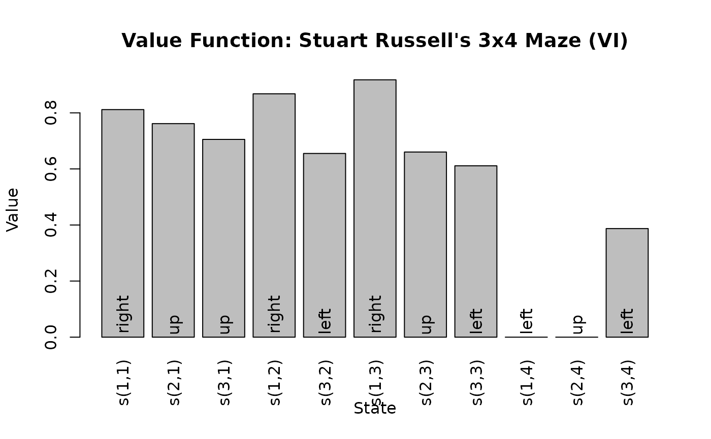
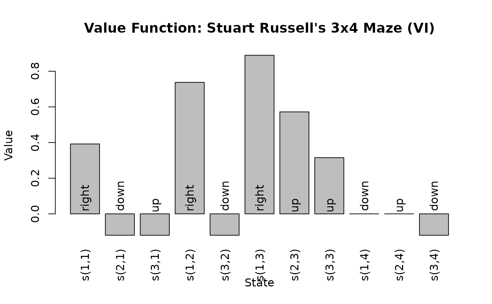
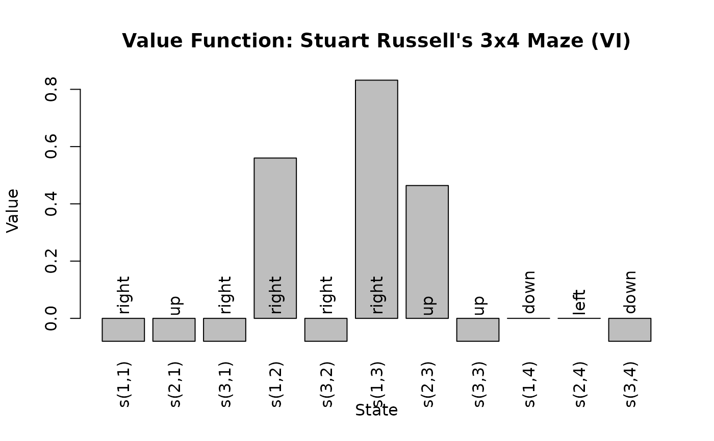
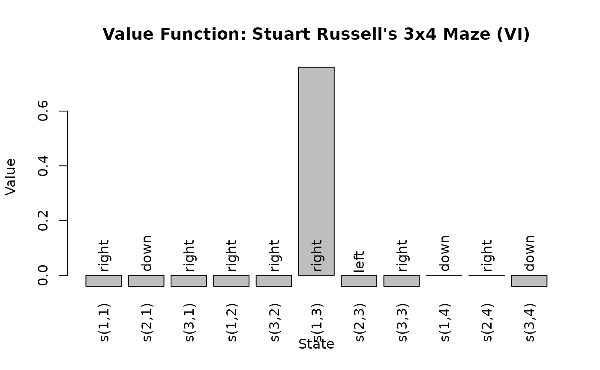
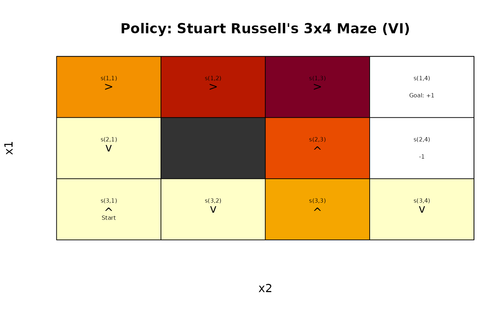
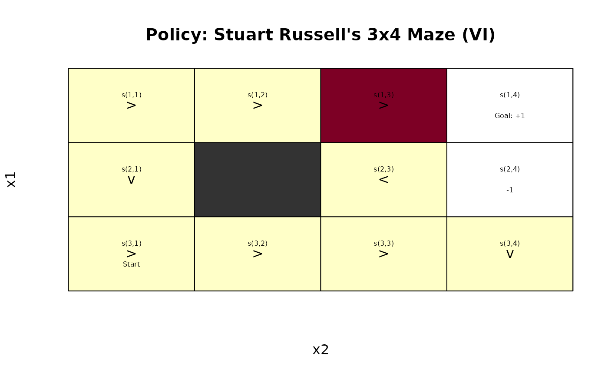

Extracts the value function from a solved MDP.
Usage
value_function(model, drop = TRUE)
plot_value_function(
model,
epoch = 1L,
legend = TRUE,
col = NULL,
ylab = "Value",
las = 3,
main = NULL,
...
)
V_zero(model, value = 0)
V_random(model, min = 1e-06, max = 1)Arguments
- model
a solved MDP.
- drop
logical; drop the list for converged, epoch-independent value functions.
- epoch
epoch for finite time horizon solutions.
- legend
logical; show legend.
- col, ylab, las
are passed on to
graphics::barplot().- main
a main title for the plot. Defaults to the name of the problem.
- ...
further arguments are passed on to
graphics::barplot()`.- value
value to initialize the value function with. Default is 0.
- min, max
minimum and maximum for the uniformly distributed random state values.
Value
Returns the value function as a numeric vector with one value for each state or as a matrix with rows for states and columns for epochs.
See also
Other value_function:
Q_values(),
bellman_update()
Examples
data("Maze")
sol <- solve_MDP(Maze)
sol
#> MDPModel, MDP - Stuart Russell's 3x4 Maze
#> Discount factor: 1
#> Horizon: Inf epochs
#> Size: 4 actions / 11 states
#> Storage: transition prob as matrix / reward as matrix. Total size: 32.3 Kb
#> Start: s(3,1)
#> Model list components: ‘name’, ‘discount’, ‘horizon’, ‘states’,
#> ‘actions’, ‘start’, ‘transition_model’, ‘reward’, ‘info’,
#> ‘absorbing_states’, ‘solution’
#>
#> Solved:
#> Method: ‘VI’
#> Solution converged: TRUE
#> Solution list components: ‘method’, ‘policy’, ‘converged’, ‘delta’,
#> ‘iterations’
value_function(sol)
#> s(1,1) s(2,1) s(3,1) s(1,2) s(3,2) s(1,3) s(2,3) s(3,3)
#> 0.8115564 0.7615521 0.7052527 0.8678082 0.6551492 0.9178082 0.6602740 0.6110843
#> s(1,4) s(2,4) s(3,4)
#> 0.0000000 0.0000000 0.3872455
plot_value_function(sol)

## finite-horizon problem
sol <- solve_MDP(Maze, horizon = 3)
policy(sol)
#> [[1]]
#> state V action
#> 1 s(1,1) 0.3920 right
#> 2 s(2,1) -0.1200 down
#> 3 s(3,1) -0.1200 up
#> 4 s(1,2) 0.7376 right
#> 5 s(3,2) -0.1200 down
#> 6 s(1,3) 0.8896 right
#> 7 s(2,3) 0.5720 up
#> 8 s(3,3) 0.3152 up
#> 9 s(1,4) 0.0000 down
#> 10 s(2,4) 0.0000 up
#> 11 s(3,4) -0.1200 down
#>
#> [[2]]
#> state V action
#> 1 s(1,1) -0.080 right
#> 2 s(2,1) -0.080 up
#> 3 s(3,1) -0.080 right
#> 4 s(1,2) 0.560 right
#> 5 s(3,2) -0.080 right
#> 6 s(1,3) 0.832 right
#> 7 s(2,3) 0.464 up
#> 8 s(3,3) -0.080 up
#> 9 s(1,4) 0.000 down
#> 10 s(2,4) 0.000 left
#> 11 s(3,4) -0.080 down
#>
#> [[3]]
#> state V action
#> 1 s(1,1) -0.04 right
#> 2 s(2,1) -0.04 down
#> 3 s(3,1) -0.04 right
#> 4 s(1,2) -0.04 right
#> 5 s(3,2) -0.04 right
#> 6 s(1,3) 0.76 right
#> 7 s(2,3) -0.04 left
#> 8 s(3,3) -0.04 right
#> 9 s(1,4) 0.00 down
#> 10 s(2,4) 0.00 right
#> 11 s(3,4) -0.04 down
#>
value_function(sol)
#> [,1] [,2] [,3]
#> s(1,1) 0.3920 -0.080 -0.04
#> s(2,1) -0.1200 -0.080 -0.04
#> s(3,1) -0.1200 -0.080 -0.04
#> s(1,2) 0.7376 0.560 -0.04
#> s(3,2) -0.1200 -0.080 -0.04
#> s(1,3) 0.8896 0.832 0.76
#> s(2,3) 0.5720 0.464 -0.04
#> s(3,3) 0.3152 -0.080 -0.04
#> s(1,4) 0.0000 0.000 0.00
#> s(2,4) 0.0000 0.000 0.00
#> s(3,4) -0.1200 -0.080 -0.04
plot_value_function(sol, epoch = 1)

plot_value_function(sol, epoch = 2)

plot_value_function(sol, epoch = 3)

# For a gridworld we can also plot is like this
gw_plot(sol, epoch = 1)

gw_plot(sol, epoch = 2)
 gw_plot(sol, epoch = 3)
gw_plot(sol, epoch = 3)
